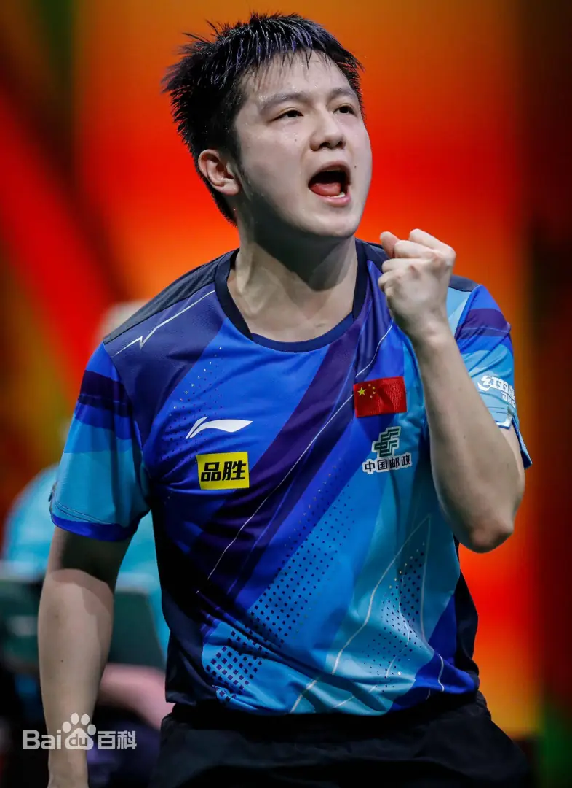

樊振东，1997年1月22日出生于广东省广州市，湖南祁东人，中国男子乒乓球运动员，中国国家乒乓球队男队员。是首位集齐奥运会、世界锦标赛、国际乒联世界杯、世界军人运动会、WTT大满贯、亚运会、亚锦赛、亚洲杯、巡回赛总决赛、全运会、全锦赛、WTT总决赛、WTT冠军赛于一身的单打冠军超级金满贯男子选手
2008年：入选八一乒乓球队。 2012年（15岁）：破格进入国家一队，同年获世青赛男单、混双、团体冠军。 2013年：首获国际乒联巡回赛男单冠军（波兰公开赛），成为最年轻巡回赛冠军之一。 2016年：首次参加奥运会，获男团金牌（里约）。 2018年：首登男单世界排名第一。 2021年：东京奥运会男单银牌、男团金牌。 2022年：成都世乒赛男团冠军核心成员；获WTT世界杯总决赛男单冠军。 2024年：巴黎奥运会男单金牌、男团金牌，成就“双冠王”。
奥运会：
2024巴黎：男单金牌、男团金牌;2021东京：男单银牌、男团金牌;2016里约：男团金牌
世锦赛：
男单冠军（2021休斯敦、2023德班）;男团冠军（2014-2024五连冠核心成员）
世界杯：
男单冠军（4次）：2016、2018、2019、2020;男团冠军（2015、2018、2019）
其他荣誉：
亚运会男单冠军（2018）、亚洲杯男单冠军（4次）;全运会男单冠军（2021）、全锦赛男单冠军（2014、2016）
樊振东力量充沛，反手拧拉极具杀伤力，相持能力世界顶级，战术素养日益成熟， 是中国男乒继马龙后的新一代核心，巴黎奥运周期扛起大旗，实现“大满贯”（集齐奥运会、世锦赛、世界杯单打金牌）。 樊振东以稳定性和大赛抗压能力著称，被国际乒联誉为“现象级球员”，是当今男子乒坛最具统治力的选手之一。